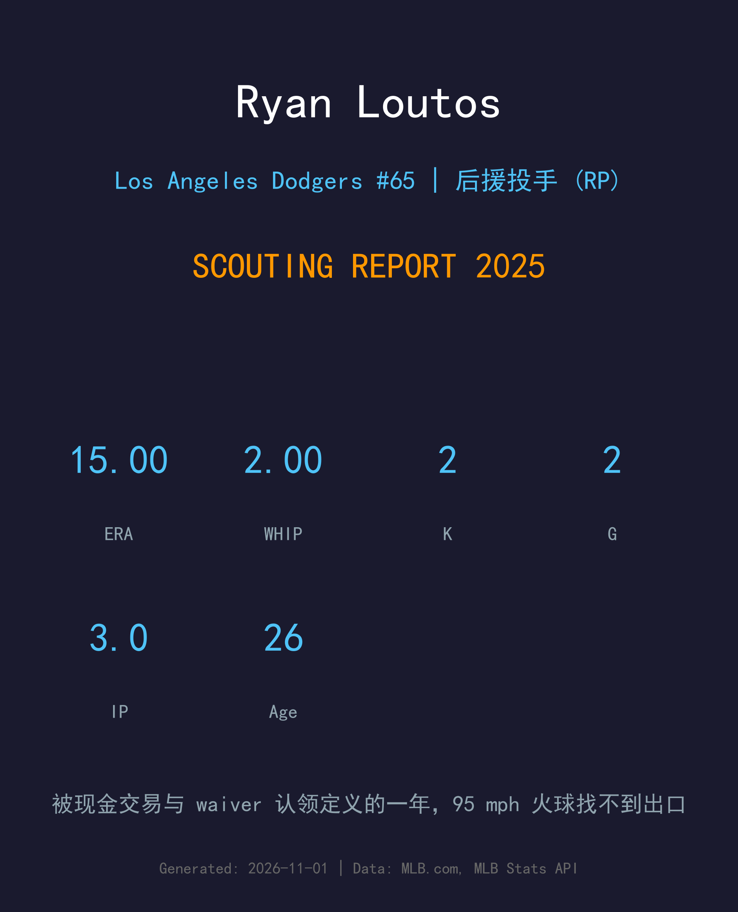
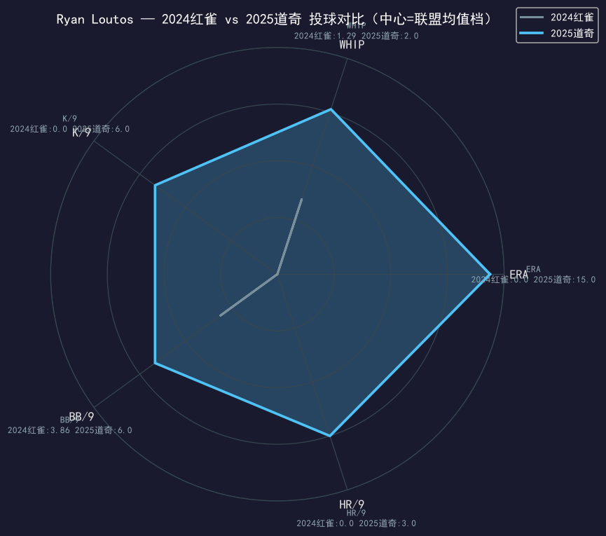
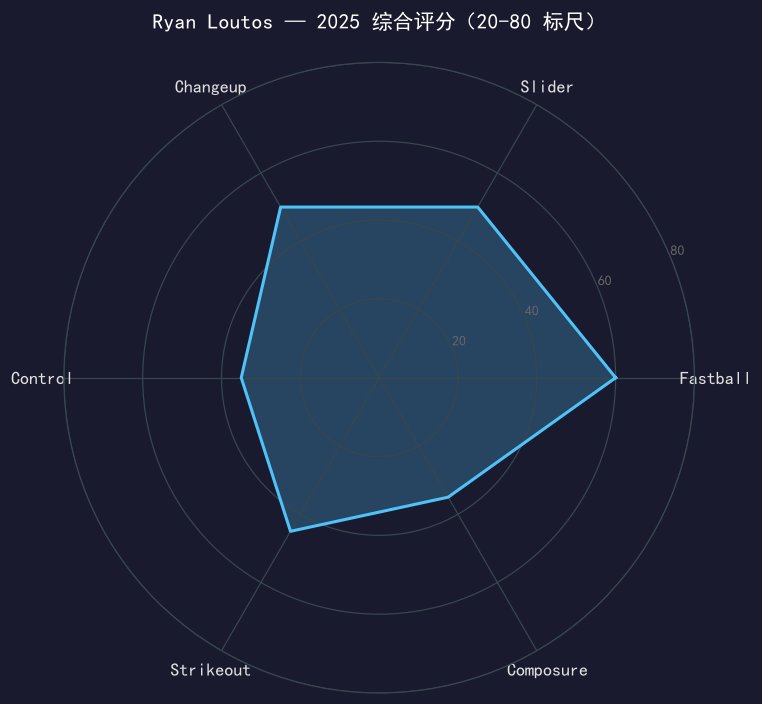

Los Angeles Dodgers #65 | 后援投手 | 右投 | 被现金交易与 waiver 认领定义的一年，95 mph 火球找不到出口

Ryan Loutos 的 2025 年是被「资产流动」定义的：5 月 1 日圣路易斯红雀把他以现金卖给道奇，5 月 16 日首次被拉上 MLB，6 月 2 日再来一次，6 月 6 日被 DFA，6 月 10 日被华盛顿国民认领——40 天内两次易主。两段道奇经历合计：2 场、3 局、自责分率 15.00。
但拆开 15.00 的外衣，硬件故事完全不同：6'7" 260 磅的巨塔体格，95.4 mph 的四缝线均速，五球种配球结构。他的问题在于把 95 mph 的火球转化为出局的能力——3 局里 4 支安打 2 次保送 1 支全垒打，只有 2 次三振。国民认领他后给了他 10 场出赛机会，ERA 12.00——同样的故事在华盛顿重演：球速惊人，结果伤人。
从 2025 年 11 月的视角看，Loutos 站在职业生涯的十字路口：26 岁、6'7"、95+ mph——这三个数字保证他永远会有下一支球队打来电话；但如果 2026 年他还不能把触球率压下来，这些电话将永远以「临时救火」开头、以「DFA」结尾。他的天花板是 Tyler Glasnow 式的巨塔 power arm，地板是 waiver 线上的常客——之间的差距，只在于控制。
2024 年 6 月 1 日在圣路易斯红雀登上大联盟，首秀季 3 场 2.1 局零失分——那是他的棒球生涯第一次被世界看见，也是至今唯一一段无失分的 MLB 记忆。
以下为道奇段数据（2025-05-01 自红雀现金交易获得，6/6 DFA、6/10 被国民认领）：

| 赛季 | 球队 | G | ERA | WHIP | IP | SO | BB |
|---|---|---|---|---|---|---|---|
| 2024 | STL | 3 | 0.00 | 1.29 | 2.1 | 0 | 1 |
| 2025（道奇） | LAD | 2 | 15.00 | 2.00 | 3.0 | 2 | 2 |
| 2025（国民） | WSH | 10 | 12.00 | 2.61 | 9.0 | 9 | 8 |
两个赛季的差距大到几乎不像同一个投手——但有一个共同点贯穿始终：他的三振产出始终低于球速应有的水平（2024 年 0 三振、2025 年 13 局 11 三振）。国民段的 10 场虽然 ERA 难看，但 9 次三振（K/9 9.0）是他 MLB 生涯里第一次展现出与 95 mph 球速匹配的三振能力——这是黑暗中唯一的光。BB/9 同时高达 8.0，再次印证他的瓶颈从来不是 stuff，而是 strike one。
2025 赛季真实配球数据（MLB Stats API pitchArsenal，道奇+国民汇总）：
接近半数使用率的火球，6'7" 出手带来夸张的俯角——这是他所有价值的物理基础，也是每支球队打电话的原因。
8.4 mph 速差，对付右打的主武器；若能提高进垒率，将成为速球的最佳搭档。
6.4 mph 速差，左打解方；与伸卡/速球形成速球系三叉。
零星使用的变化组合——五球种结构意味着每颗球的打磨时间都有限。
红雀以现金把他卖给道奇——这是 MLB 里最便宜的交易形式，相当于一句「我们不要了，但祝你找到下家」。道奇用 40 天验证了他，然后以 waiver 形式送给国民。两次流转，两次「不值一个球员」的定价。但对 26 岁的 6'7" power arm 来说，定价从来不是问题，找到愿意给 repetitions 的环境才是——国民的 10 场出赛就是他在道奇从未得到的礼物。
95.4 mph 的速球应该对应 K/9 10+，Loutos 的 MLB 生涯 K/9 只有 7 出头。这个错位只有一个解释：速球进垒位置不够好。打者不是被他三振，而是把球打进场内——生涯 WHIP 2.0+ 说明触球质量糟糕。好消息是这通常不是不可逆的：很多巨塔投手在 26-27 岁经历机械微调后突然开窍（球速已经在，只需要把 strike one 率提高 10 个百分点）。
从 11 月的视角看，Loutos 的 2026 年将决定他是「Tyler Glasnow 故事」还是「waiver 浮萍故事」。国民的重建牛棚给了他位置，但需要他在春训里证明两件事：能把 BB/9 压到 4 以下，能把速球 first-pitch strike 率提到 60%。做到了，他会突然成为某支球队交易deadline上的抢手货；做不到，26 岁 6'7" 的身体也会慢慢失去市场的耐心。

stuff 已到、控制未至的巨塔浮萍
C+ 级 / 高风险高回报 power arm
道奇 2025 季后赛夺冠之路：外卡 2-0 红人 → NLDS 3-1 费城人 → NLCS 4-0 酿酒人 → 世界大赛 4-3 多伦多蓝鸟。
Loutos 与这条夺冠路无关——6 月 10 日他已披上国民球衣，而国民连季后赛的门槛都没摸到。他的 2025 年在华盛顿九月的牛棚里结束，ERA 12.00 的 10 场出赛是他留给国联东部的全部作品。十月不属于他，但 2026 年的春训会再次属于他——只要 95 mph 还在。
Loutos 的 2026 年从国民的牛棚竞争开始：他需要把「火球巨塔」的标签从球探报告翻译成实际出局数。国民乐于给机会，但机会有保质期——如果上半年 BB/9 仍高于 5，waiver 线会再次张开。
理想剧本：机械微调见效，K/9 冲到 11+，成为国民牛棚亮点并被竞争者盯上
现实基准：继续在 waiver 边缘浮沉，间或交出亮眼小段
上行惊喜：转型长中继/盗局者，用球速和体格吃下 60+ 局
Ryan Loutos 来自伊利诺伊州埃尔克格罗夫村——有趣的是，这和队友 Bobby Miller 的家乡是同一个芝加哥郊区小镇。两个 6'3"+ 的火球手从同一片高中棒球场走进大联盟，在 2025 年的道奇牛棚里短暂地成为了同乡队友。
他的职业之路从圣路易斯开始：2024 年 6 月 1 日在红雀完成 MLB 首秀，3 场零失分给了他一个完美的开头。但 2025 年 5 月 1 日，红雀以现金把他送到洛杉矶——职业棒球用最干脆的方式告诉他：你还不够好。道奇给了他两次机会，6 月 10 日国民认领了他——给了他 10 场机会。
2025 年 11 月的 Ryan Loutos 手中握着一份矛盾的履历：95.4 mph 的速球说他是大联盟材料，2.0+ 的 WHIP 说他不是。2026 年春天，他要在华盛顿的投手丘上亲手解开这个矛盾——答案只有两个字：好球。